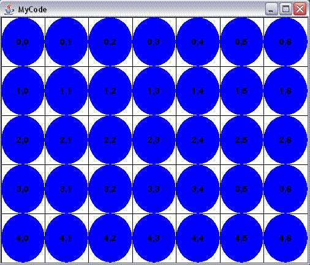

import java.awt.*;
import javax.swing.*;
class MyCode extends JComponentWithEvents {
private int rows = 5;
private int cols = 7;
public void keyPressed(char key) {
if (key == SPACE) {
// Increase rows and cols when user hits SPACE bar
rows++;
cols++;
}
else if (key == 'r') {
// Reset to some small # of rows and cols
rows = 3;
cols = 2;
}
}
public void paint(Graphics2D page) {
int row, col;
for (row=0; row<rows; row++)
for (col=0; col<cols; col++)
paintCell(page, row, col);
}
// Helper method to paint a single cell in the 2d grid
public void paintCell(Graphics2D page, int row, int col) {
int width = getWidth();
int height = getHeight();
int left = col * width / cols;
int top = row * height / rows;
int right = (col+1) * width / cols;
int bottom = (row+1) * height / rows;
// paint the grid's outline
page.setColor(Color.black);
page.drawRect(left, top, right-left, bottom-top);
// fill the cell
page.setColor(Color.blue);
page.fillOval(left, top, right-left, bottom-top);
// label the cell
page.setColor(Color.black);
page.setFont(new Font("Arial", Font.BOLD, 14));
String label = row + "," + col;
drawCenteredString(page, label, left, top, right-left, bottom-top);
}
public static void main(String[] args) { launch(500, 400); }
}
Output:
